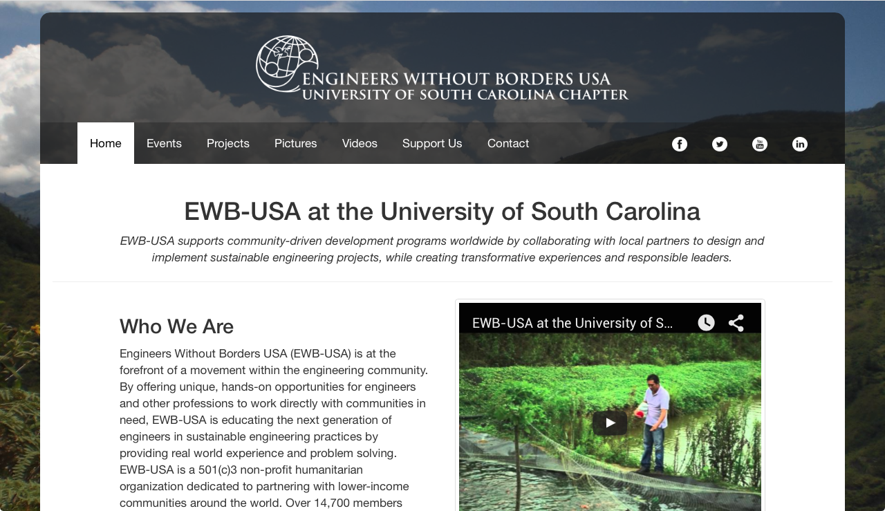
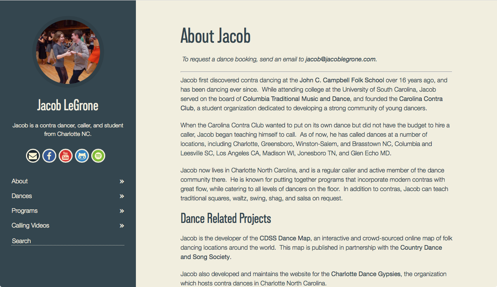

<!--                 <div class="row">

                    <div class="six columns">
                        <figure id="ewbusc">
                            
                            <figcaption>
                                <h4>Engineers Without Borders</h4>
                                <p>The SC Health Atlas is a source of health and social services data for South Carolina. The Atlas aims to provide South Carolinians with data and tools necessary to explore the availability of health and social services in their communities, and link people to the care they need.</p>
                                <a class="button" href="http://ewbusc.org">Visit ewbusc.org</a>
                            </figcaption>
                        </figure>
                    </div>

                    <div class="six columns">
                        <figure id="personalblog">
                            
                            <figcaption>
                                <h4>Personal Blog</h4>
                                <p>The SC Health Atlas is a source of health and social services data for South Carolina. The Atlas aims to provide South Carolinians with data and tools necessary to explore the availability of health and social services in their communities, and link people to the care they need.</p>
                                <a class="button" href="http://blog.jacoblegrone.com">Visit blog.jacoblegrone.com</a>
                            </figcaption>
                        </figure>
                    </div>
                </div> -->